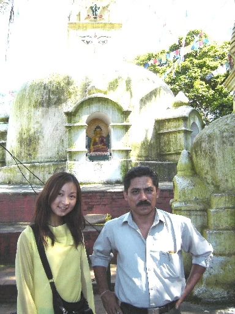
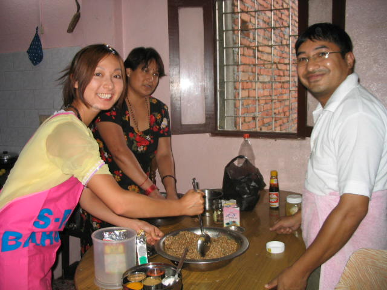
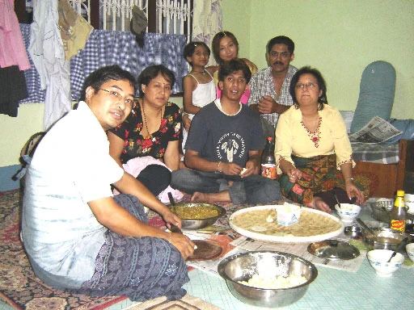
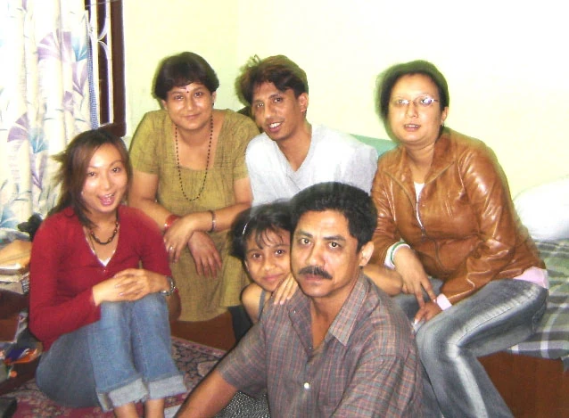

参加者レポート
高橋法子さま ネパール参加レポート
ネパールでの1日
| 6:30 |
起床。ここの人達は早起きです。私が起きる時間にはすでに他の家の人もみんな掃除や洗濯をしています。 |
|---|---|
| 7:00 |
シャワー。（2日に1回） |
| 7:30 |
朝食。私の朝食は「いつも何を食べるの？」と聞かれ私は「いつもパンを食べる」と言ったので、トーストとゆで卵、おいしいカレーとミルクティーをいただいていました。いつも子供達と一緒に朝食をとります。 |
| 8:00 ～ 12:00 |
自由時間。子供達が学校に行ってからは、英会話レッスンの時間まで時間があるので家でお母さんと楽しいおしゃべりをして過ごします。いつもお母さんはネパールのいろんな文化について教えてくれました。また、レッスンが休みの日は、お母さんと観光地に行って過ごしました。お父さんも休みの日になるとバイクでいろんな観光地に連れて行ってくれました。  |
| 12:00 |
ランチ。お母さんと一緒にカレーを食べます。毎日同じカレーではなくて、いろんな種類のカレーがあるんです。野菜も毎回違ったりして、とてもおいしいです。 |
| 13:00 |
パタンにて英会話レッスン。レッスン先に行くときはいつも同じタクシーを手配してくれました。価格もかなり安かったです。だから安心して利用できました。約30分で学校に着きます。 |
| 18:00 |
帰宅。帰宅してからは同じ部屋で子供達と宿題をやったり、夕食の時間まで遊んだりして過ごします。お父さんは毎日5時半に帰ってきます。 |
| 19:30 |
夕食。家族揃ってカレーを食べます。お母さんの作るおいしいカレーがいつもとても楽しみでした。私がどうやって作るのかと尋ねると、丁寧に教えてくれました。   |
| 20:30 |
自由時間。残りの宿題をやったり、家族とおしゃべりしたりして過ごします。お父さんは気を遣って一度夜のカトマンズの街を見せてあげたいからと連れて行ってくれました。街の中心には人がたくさんいて活気がありました。それに街の至るところにお寺があり、ひとつひとつお父さんはそれについて説明してくれました。  |
| 22:00 |
就寝。昼間たくさん運動する子供達はもう眠くなる時間です。私も普段日本でなら起きている時間ですが、子供達同さまこの時間になると眠くなります。規則正しい生活を送っていました。だからなのか毎日調子がとてもいいです。 |
日本語教師ボランティアをして
アルチャナさんと日本語学校に行き、日本語教師をしてきました。
人に何かを教えるなんて生まれて初めてのこと。どう進めていったらいいのか不安でしたが、まず始めに自己紹介と住んでいる場所の説明。日本人の生活などをお話しました。
生徒さんはみんな日本語が上手でした。質問もよくしてくれるので、その説明をしたりしているとあっという間に時間がたってしまいます。
ホワイトボードに説明するのに絵を書いたり、生徒さんに分かるようにひらがなとカタカナで書きます。ネパールに来て驚いたことや、私が不思議に思ったことなどを話すとみんな笑ってくれて和やかなムードで授業がすすめられました。
今になって思うのは最初は初めてのことで不安でしたがやっぱり思い切ってやってみて良かったなということです。また機会があったらぜひこのボランティアをしたいと思います。生徒さんとも仲良くなれるし、楽しかったです。